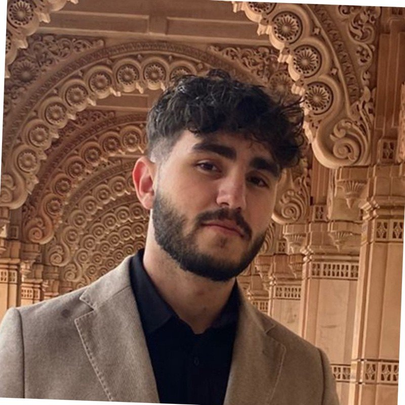

I develop low-power spatial intelligence systems using wearable and wireless sensing for human-environment interaction.

I am a Ph.D. student in Computer Engineering at Northeastern University, working within the Spatial Intelligence Research Group (SINRG) under Prof. Mallesham Dasari. My research sits at the intersection of wearable computing, wireless sensing, and edge intelligence, focused on building systems that perceive and reason about physical space with minimal power budgets.
I investigate multimodal traffic dynamics in XR and AI glasses, develop capacitive sensing approaches for eye tracking, and design adaptive streaming and bitrate control for immersive content. My work spans Bluetooth, BLE, Wi-Fi Direct, and 5G protocols, always aiming to push the boundary of what lightweight, wearable devices can sense and understand.
Before starting my Ph.D., I earned my B.S. in Electrical & Computer Engineering from Norwich University (with minors in Mathematics and Computer Science), where I was named Student Engineer of the Year and served as President of Eta Kappa Nu.
We carry glasses, watches, and earbuds every day, yet these devices remain largely blind to the spatial context they inhabit. I believe that making them spatially aware at ultra-low power can fundamentally change how people navigate and interact with their environments.
I've seen how a simple pair of AI-powered glasses can transform mobility for someone with visual impairment, not through cloud-scale compute, but through lightweight, on-device intelligence. The gap between what's possible in a lab and what's deployable on a human body is where my research lives.
I'm working toward a future where spatial intelligence is as ubiquitous as Wi-Fi: wearable devices that understand proximity, motion, and gaze, enabling safer navigation, more natural interaction, and ambient computing that doesn't demand our constant attention.
Characterizing multimodal traffic patterns in XR and AI glasses across Bluetooth, BLE, Wi-Fi Direct, and 5G. Profiling latency, throughput, and power on commercial devices including Meta Ray-Ban, Even G1, and Brilliant Labs Frame.
Developing capacitive sensor-based eye tracking for power-efficient gaze estimation in mobile XR. Building AI-powered smart glasses that support spatial awareness and independent navigation for visually impaired users.
Object-level bitrate control for live XR scene streaming using geometric mesh representations. Evaluating adaptive bitrate performance across real-world bandwidth traces to improve quality-of-experience under constrained conditions.
Open to research collaborations, spatial intelligence, and the future of wearable sensing.